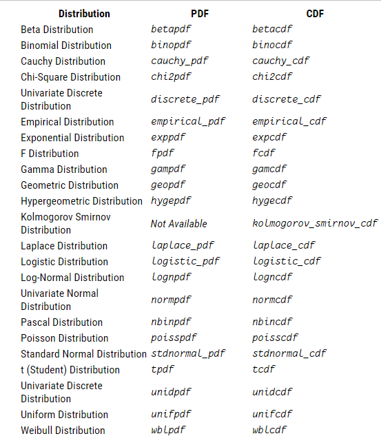
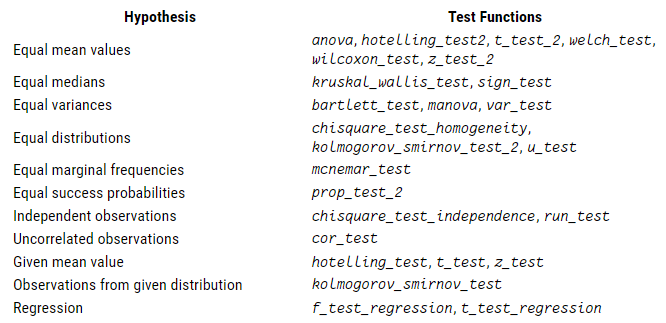
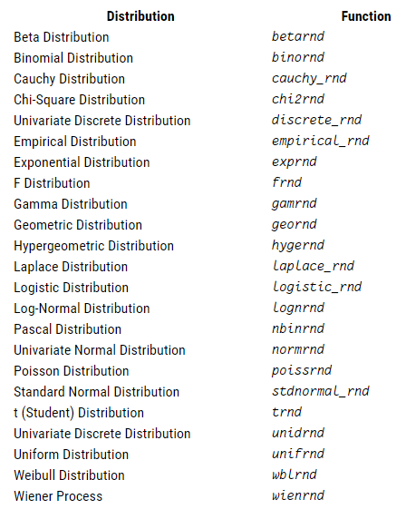

Увод у статистику
Увод
Octave има подршку за различите статистичке методе укључујући дескриптивну статистику, расподелу вероватноће, статистичке тестове, генерисање случајних бројева и још много тога.
Дескриптивна статистика
Један од главних циљева дескриптивне статистике је концизно представљање суштине великог скупа података. Octave омогућава израчунавања функција средњих вредности, медијане и других функција које описују неки скуп података са само једним бројем.
mean(x) је функција која за параметар узима матрицу x, рачуна средње вредности у свакој колони и као резултат враћа вектор врсте са израчунатим вредностима.
median(x) је функција која за параметар узима матрицу x, рачуна медијалну вредности у свакој колони и као резултат враћа вектор врсте са израчунатим вредностима.
mode(x) је функција која за параметар узима матрицу x и рачуна елемент који се појавио највише пута.
Како нам један број који дају дескриптивне функције често није довољан да закључујемо о скупу података, Octave нам пружа подршку за рачунање дисперзије података.
range(x) је функција која за параметар узима матрицу x, рачуна разлику максималне и минималне вредности у свакој колони, и као резултат враћа вектор врсте са израчунатим вредностима.
std(x) је функција која за параметар узима матрицу x, рачуна стандардну девијацију у свакој колони, и као резултат враћа вектор врсте са израчунатим вредностима.
Још неке корисне функције
Octave подржава различите корисне статистичке функције. Многe од њих се користе као почетни кораци за припрему скупа података за даљу анализу.
center(x) је функција која за параметар узима матрицу x, у свакој колони одузима средњу вредност елемената колоне од вредности у колони и као резултат враћа матрицу са измењаним вредностима.
nchoosek (n, k) је функција која рачуна број начина да се од n елемената скупа одабере k.
Расподеле
Octave има подршку за рачунање густине расподеле и функције расподеле случајних величина. На слици испод су приказане подржане функције расподеле и густине.
На пример, за биномну расподелу имамо следеће функције:
binopdf(x,n,p) је функција која за сваки елемент x рачуна функцију густине вероватноће биномне расподеле са параметрима n и p, где је n број понављања експеримента и p је вероватноћа успеха.
binocdf(x,n,p) је функција која за сваки елемент x рачуна функцију расподеле вероватноће биномне расподеле са параметрима n и p, где је n број понављања експеримента и p је вероватноћа успеха.
Статистички тестови
Статистички тест обезбеђује механизам за доношење квантитативних одлука о процесу. Намера је да се утврди да ли има довољно доказа да се одбаци хипотеза о процесу.
Octave има могућност да изврши много различитих статистичких тестова. Следећа табела приказује доступне тестове.
Испод је наведен пример употребе теста t-test за испитивање да ли је срдња вредност посматране случајне величине са нормалном расподелом једнака датој вредности
[pval, df] = t_test (x, m)
Дакле, познато нам је да случајна величина х има нормалну расподелу и желимо да испитамо следећу хипотезу
mean(x)=m, за дато х и m.
Функција враћа вредност df која представља степен слободе у Студентовој расподели која се користи за апроксимацију функције расподеле случајне величине х. Такође, функција враћа вредност df која представља вероватноћу да средња вредност величине буде у критичном интервалу, под условом да је хипотеза тачна. На основу ове вредности одређујемо да ли ћемо хипотезу одбацити или не. Што је мања вредност pval, то је већа вероватноћа да је наша хипотеза погрешна и одбацујемо је.
Генерисање случајних бројева
Octave има могућност да генерише насумичне бројеве из великог броја расподела. Следећа табела приказује доступне генераторе случајних бројева.
Примери коришћења функција за генерисање случајних бројева при одређеној расподели:
unifrnd (a, b, r) је функција која враћа квадратну матрицу димензије r која садржи вредности случајне величине која има униформну расподелу на интервалу [a,b].
betarnd (a, b, r) је функција која враћа квадратну матрицу димензије r која садржи вредности случајне величине која има униформну бета расподелу са параметрима a и b.